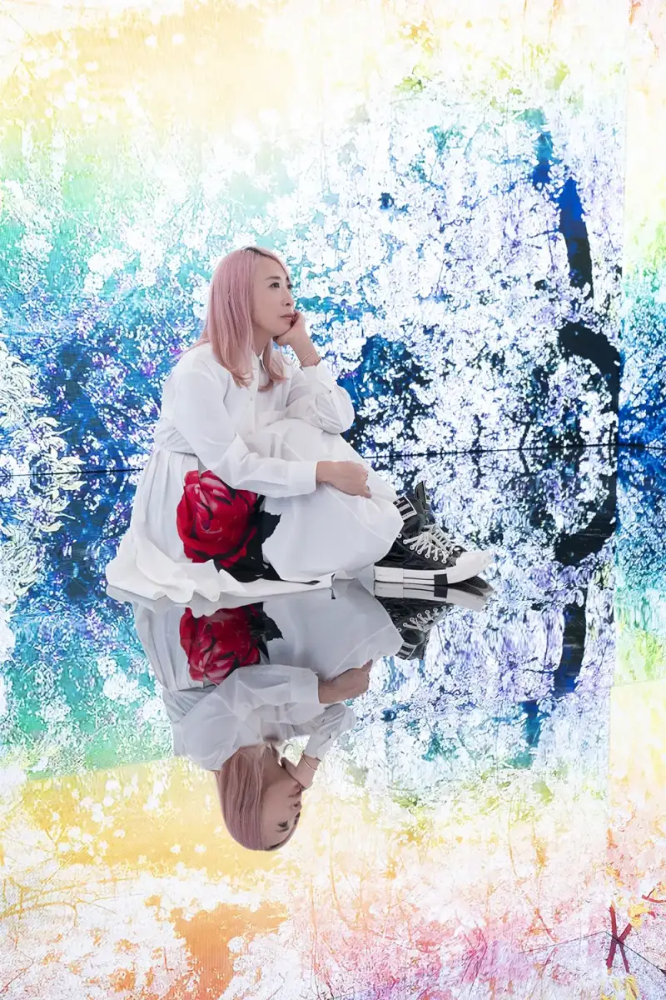
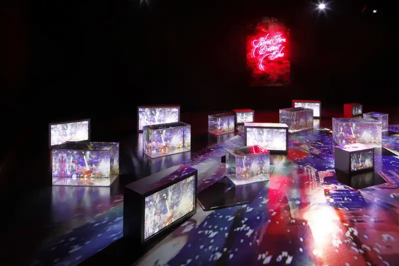
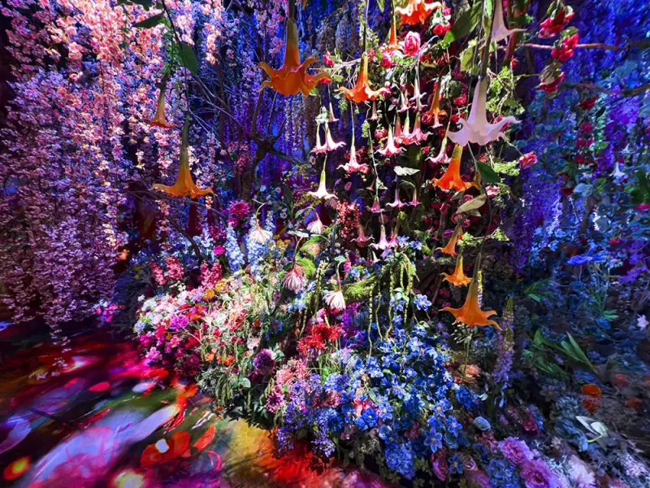
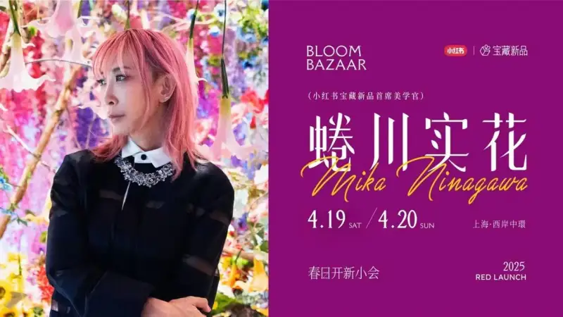
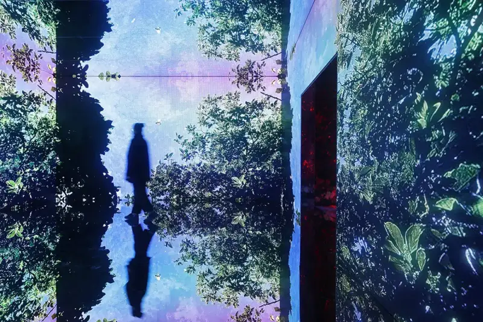
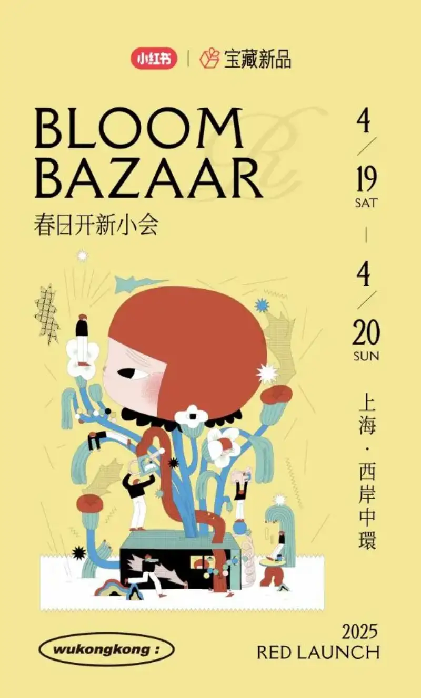
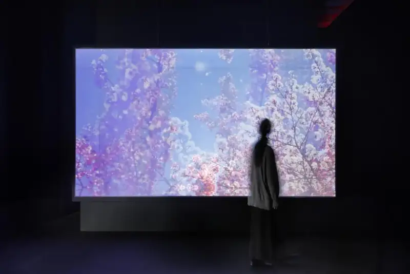
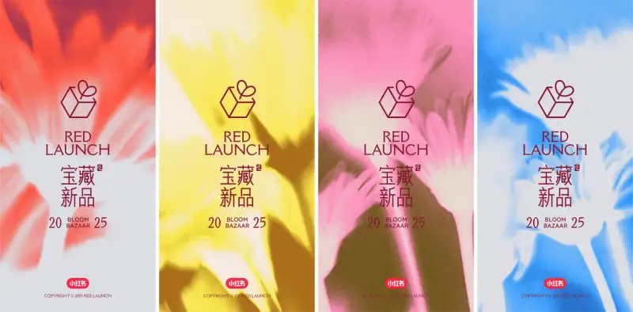

Ninagawa Mika's "New" Starting Point: Aesthetic Resonance With Xiaohongshu
The name Ninagawa Mika is always linked to intense color and bold visual impact. This Japanese contemporary artist started with photography and turned the camera into a medium for exploring the expression of life. In recent years she has also moved into film and directing. "Photography is the starting point of everything and also where I return. As I capture the world, I keep meeting a new version of myself."

Image: Ninagawa Mika © Yihao Art Advisory
Behind these bright, colorful images lies Ninagawa's way of talking to the world. This is also why she joined social platforms. In an age when everyone takes photos, what Ninagawa most wants to share is not the so-called Ninagawa-style photos that have been copied a million times. It is the chance for every ordinary person to talk to the world.


Image: Ninagawa Mika © Yihao Art Advisory
From the film darkroom to the phone screen, from the art museum to the social platform, Ninagawa is exploring yet another dimension of her work. This time she has chosen Xiaohongshu as a "new canvas" to open another path for artistic expression.
Spring New Event: Aesthetic Harmony From Online to Offline
On April 19 to 20, the "Spring New Event" by Xiaohongshu Treasure New Products opens at West Bund Central, Shanghai. As the chief aesthetic officer of Xiaohongshu Treasure New Products, Ninagawa Mika helped design the art space. The last time Ninagawa brought her own work to curate a show in Shanghai was eight years ago.

This event makes "Ninagawa aesthetics" tangible offline. It is also a showcase of how Xiaohongshu Treasure New Products leads trends in taste, style, and cutting-edge living. The art space Ninagawa helped design centers on her iconic flower-sea imagery and an LED light installation. She adapted the LED work from her Kyoto show for this local setting. The "Ninagawa Mika photo template," developed by Xiaohongshu together with Ninagawa, gives every visitor an instant "Ninagawa view."

Image: Ninagawa Mika © Yihao Art Advisory
This Spring New Event goes beyond artistic inspiration. The site will also present a series of interactive experiences: the tech account shows new AI applications and Unitree robot and robot-dog acts from the Spring Festival Gala, and the digital account offers the latest gadget demos. Along the river at West Bund, 11 light boxes become a "riverside art museum," showing spring photos submitted by Xiaohongshu users and presenting aesthetic moments from everyday life. More than 20 brands launch new products on site, staged in lifelike scenes to create a warm, experiential space. Behind each idea and interaction is one core message: taste should not be a distant art display. Like spring, it should be fresh, friendly, and close at hand. Through this highly interactive design, Xiaohongshu Treasure New Products wants every user to feel the seamless link between beauty and life, and to spark their own creativity and taste.
A little bonus: a treasure hunt runs across the whole site. Do the interactions, win "new coins," and redeem them for gifts.

In a Changing Era, Finding an Anchor for "New"
"I really value new experiences. I feel that everything in the world is always experienced in new ways." These words of Ninagawa's may be the best note for the Spring New Event.
When visitors press the shutter in the crimson flower sea, and when users share spring notes on Xiaohongshu, they are each completing an awakening of Ninagawa aesthetics: catch the moment with the camera, and renew the self through experience. The partnership between Xiaohongshu and Ninagawa shows that, in a fast-moving era, "new" is never a surface trend. It is the ongoing ability to keep finding beauty and a different self.

Image: Ninagawa Mika © Yihao Art Advisory
April 19 to 20, West Bund Central, Shanghai. The Xiaohongshu Treasure New Products Spring New Event opens soon!
This experiment about "new" waits for you to see it. Step into Ninagawa's art space and feel art and life blend without borders. Or join the #SpringNewEvent topic on Xiaohongshu online, follow the latest from Xiaohongshu Treasure New Products and Ninagawa Mika, share your spring images, and tag @Ninagawa Mika. Everyone can find their own "new starting point" here. From digital sharing to physical experience, Ninagawa Mika and Xiaohongshu together have given "new" its full meaning: in a changing era, beauty connects all things.
